民主是根据社会成员的意见做出决定的过程。它是通过让个人有机会表达他们的偏好（通过投票），然后结合这些个人喜好做出决定来实现的。
这个过程中最熟悉的例子是两个候选人竞争同一个职位的竞选。社区成员为两位候选人投票，获得最多选票的人获胜。
关键在于：得票最多的人获胜，这是建立民主社会的基石，但这是否公平？
一个更为复杂的选票制可能会让选民表明他们对一个候选人的喜爱程度。我们使用短语偏好概况（preference profil）来表示个人偏好的集合。
想象一下，竞选公职的两位候选人为A和B。我们提交的投票很简单：选民标记他们喜欢的其中一位候选人。如果有n个选民，我们收集的数据如下所示：
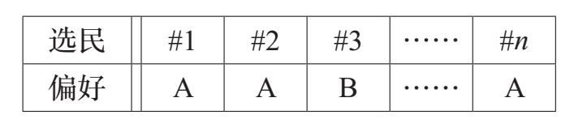
我们如何将这种偏好概况转化为一个决定？通常的方法是统计有多少人喜欢A，多少人喜欢B。选举的获胜者是获得选票最多的候选人。我们把这种方法称为多数投票制（majority），这是民主社会的选择方法。但是，这不是将偏好概况转换为决定的唯一可能的方法。让我们看看一些其他方法。
独裁者（dictator）方法认为选举的结果是一个特定个人的偏好，比如选民＃1的偏好。如果＃1更喜欢A，则A获胜，但如果＃1更喜欢B，则B获胜。其他人的意见无足轻重。
我们将多数投票制和独裁者方法称为决策方法（decision methods）。两者都输入偏好概况，然后输出一个决定。在现实世界中，这两种方法都被使用。但总的来说，我们认为独裁者方法是不公平的。为什么？
一种决策方式如果被认为是公平的，应该满足某些属性。独裁者方法令人反感的方面是没有平等对待所有选票。更正式地说，一个公平的决策方法应该表现出选民的中立性——这只是一种高级的表达方式，用以说明谁持有哪种偏好并不重要，重要的是分别有多少选民持有各个偏好。多数投票制决策方法满足了选民中立性（voter neutrality），但独裁者方法没有。
重要的是不要将决策方法（如多数投票制）与这些方法可能具有的属性（如选民中立性）相混淆。
如果我们只使用选民中立的决策方法，那么只要统计出每个候选人获得的支持票数，我们就可以总结出偏好概况。偏好概况可以用图表显示
如下：
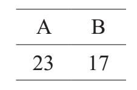
这里介绍另一种我们称为按字母顺序（alphabetical）的决策方法。在这种方法中，候选人的姓名按照字母顺序排列，排在第一位的是获胜者。这意味着，在上图A对决B的选举，A是赢家。
注意，独裁者方法满足了候选人中立性。
显然这个决策方法是不公平的，为什么？它满足了选民中立性：它完全无视每个人的偏好，对待所有选民一视同仁！问题在于，它没有平等地对待候选人。我们说，当候选人被同等对待时，该决策方法便满足了候选人中立性（candidate neutrality），改变候选人的姓名不应该影响结果。
我们的公平感导致我们要求决策方法应该表现出选民中立性和候选人中立性。就这些吗？
这是另外一个我们称之为奇数人投票制（odd）的决策方法：获得选民支持数为奇数的候选人为胜利者。所以如果A的支持选民有20个，而B有13个，则B是赢家。这种方法同时满足选民中立性和候选人中立性。
或者考虑一下少数投票制（minority）的方法：获得选民支持数最少的候选人胜出。所以，如果支持A的选民有12个，支持B的有30个，那么A就赢了。这种方法也同时满足选民中立性和候选人中立性。
选民中立性和候选人中立性这两个属性摒除了一些不公平的决策方法（如独裁者和按字母顺序），一些愚蠢的方法（如奇数人投票制）却满足了这两个要求。所以让我们介绍另一个方法，可以帮助我们区分明智的方法（如多数投票制）和愚蠢的方法。
下面奇数人投票制决策方法存在的问题。假设偏好概况如下所示：
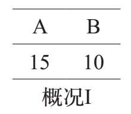
按照奇数人投票制的决策方法，A是获胜者。
现在让我们假设其中一个选民改变主意，从偏好B（失败者）转变为偏向A（获胜者）。只有这一个选民改变了意见，其他人的喜好不变。新的偏好概况如下：
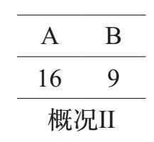
按照奇数人投票制的决策方法，B变成了获胜者。
下面是一个关于单9调9性9的正式陈述。如果一个决策方法满足单9调9性9，意味着如果该方法从给定的偏好概况宣布了一个获胜者X，并且如果一个选举人将他 /她的偏好从失败者转变为X，然后形成一个新的偏好概况（只有这一个改变），那么在新的偏好概况中，决策方法必须选择X作为赢家。换句话说，将一个选民的偏好从失败者转变为获胜者不会损害获胜者。
这很奇怪：如果一个选民改变他/她的意见，从偏好失败者转变为偏向获胜者是不应该损害获胜者的，现在却发生了这种情况。奇数人投票制的决策方法违反了单调性（monotonicity）。
奇数人投票制的决策方法还有一个问题。如果选民是偶数会怎么样？可能有以下两种情况：
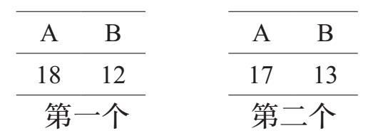
对第一个偏好概况应用奇数人投票制不会产生获胜者，而将其应用于第二个偏好概况则会产生两个获胜者。无论哪种方式，都是平局。
如果一个决策方法避免了平局，那么选民的集体意见就能保证做出明确的决定，这种方法是可取的。一些决策方法（如独裁者）不会产生平局。
但如果选民数量平均分配，同时满足选民中立性和候选人中立性的决策方法必定产生平局。
因此，如果我们要求决策方法同时满足选民中立性和候选人中立性的话，我们必须接受这样一个事实，即如果有一半的选民偏好一个候选人，而另外一半选择另一个候选人，则必定产生平局。多数投票制决策方法就是如此。
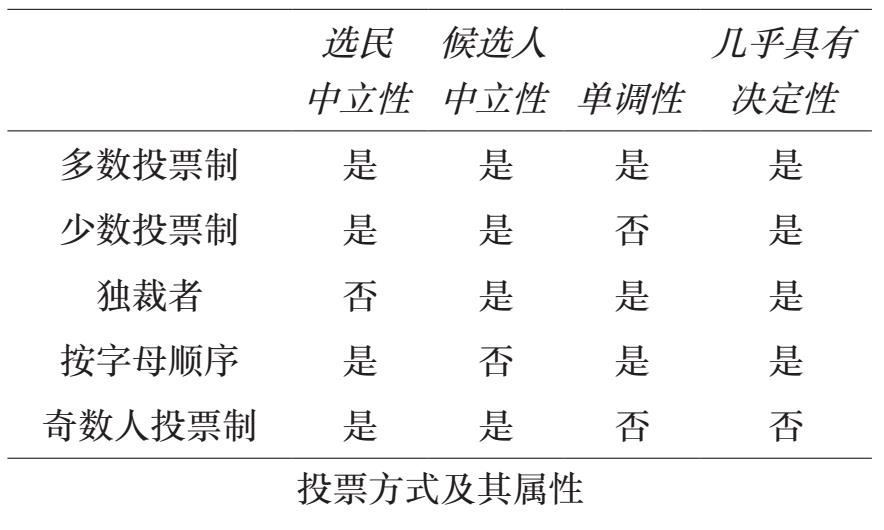
但是，多数投票制只有在这种情况下才无法选出唯一的获胜者。我们说多数投票制几乎具有决定性，意味着它总是选择唯一的获胜者，除非在选民的偏好平分秋色的情况下。
由于技术上的原因，独裁者几乎具有决定性，因为永远不会产生平局。
少数投票制也总是具有决定性的（但不具备单调性）。
我们已经确定了决策方法的四个属性，这些属性反映了我们的公平感。一个公平的决策方法应该是满足选民中立性、候选人中立性、单调性，且几乎具有决定性。令人高兴的是，多数投票制满足了这四个属性。上表总结了我们迄今为止所考虑的所有投票方式所具有的属性。
但也许还有一个可行的选择。是否有另外一种同时具有这四个属性的决策方法？
答案是没有。1952年，肯尼斯·梅（Kenneth May）证明，多数投票制是唯一满足选民中立性、候选人中立性、单调性，且几乎具有决定性的决策方法。
多数投票制是一种结合个人的意见来做出决定的公平方式，是有严谨的数学逻辑支撑的。对于两党选举，梅的定理表明这是唯一合理的选择。
在上一节中，我们只考虑了产生一名获胜者的选举。而从一大批候选人中选出两个或两个以上的获胜者的情况并不罕见。最常见的例子是学校董事会的选举。
如果有两名以上的候选人，情况就会有很大的变化。我们希望在选举多名候选人的时候也有一种类似多数投票制的方法。
让我们从选民表达自己偏好的方法开始吧。当有三个（或更多）候选人时，我们假设每个选举人都按照喜好顺序对候选人进行排序。在这种情况下的偏好概况看起来像下面的图表这样：
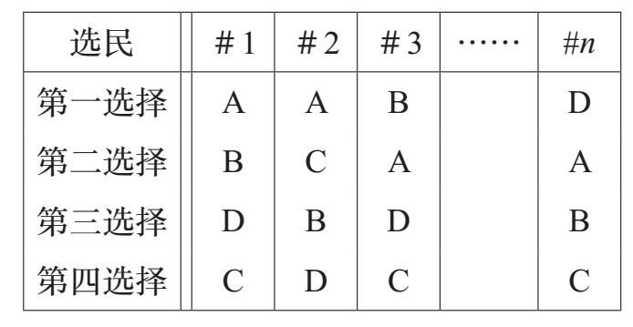
我们将尽可能保持简单。我们可以想象，选民更喜欢将A作为首选，对B和C的态度没什么区别，但真的很鄙视D。我们的希望是这个选民对候选人进行排序，而不是提供一个用来表明喜好程度的机制。数学家们的确考虑了更复杂的明确选民概况偏好的方法，但我们将坚持简单的排序方法。
和以前一样，我们希望找到一种决策方法，输入偏好概况，输出获胜者。
例如，独裁者方法宣布选民＃1的首选候选人是选举的胜利者，则胜利者将是候选人A，其他选民的意见都被忽略了。
独裁者的方法不能满足选民中立性（但确实满足候选人中立性）。由于（大概）我们只想考虑选民中立性方法，所以可以通过计算每个偏好顺序各获得多少票数来报告偏好概况。例如，如果有三个候选人，偏好概况假设如下：
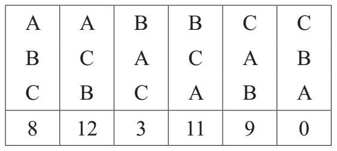
如果有k个候选人竞选职位，则偏好概况将有k！列；见第10章。
在这个概况中，20人将A作为他们的首选，14人更喜欢B，9人认为C是最好的选择。我们应该用什么方法来选择获胜者？
当有两个候选人时，可以选择多数投票制。如果有三名或更多的候选人，且如果有一半以上的选民有相同的首选，则结果将是大多数人的意见。事情不一定如此，所以把多数投票制扩展至这个更普遍的设置是有问题的。另外，多数投票制不考虑选民的第二或更次级的选择。让我们看看为什么这很重要。假设以下是偏好概况：
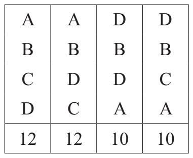
注意，超过一半的选民将A作为他们的首选。是否证明选择A是“最好的”选择？我们所说的“最好的”意味着什么？这些不是数学问题，但我们的价值观可以指导如何发展公平的概念。为了说明这一点，假设候选是餐馆，选民是选择聚餐场地的上班族。下面是更多关于餐馆的信息：
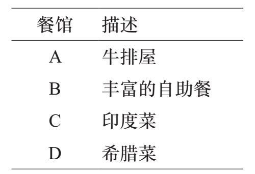
问题变得更清楚了。大多数上班族（24人）都喜欢吃牛排，但是很多人（20）非常讨厌这种选择。后者喜欢将印度菜或希腊菜作为他们的首选。
我们所看到的是，办公室里的每个人都把自助餐厅作为他/她的第二选择。这似乎是一个很好的让步，一个聪明的老板可能会选择在这里进行聚餐。是否有可能建立一种能够在选举中得出同样结论的决策方法？
偏好概况与投票制
我们没有讨论选民如何表达自己的喜好，我们只是假设我们知道每个选民如何对候选人进行排序。偏好概况是对所有选民的排名统计。
在典型的选举中，投票制只允许选民选择一个候选人，它没有给选民提供候选人排序的方式。如果决策方法是简单多数票法（plurality），那么这种方法才有意义，因为这种方法只考虑选民的第一选择。
有时投票制允许选民选出不止一名候选人。如果决策方法是投两人票制（vote–for–two），那么选民需要报告他们的前两个选择，他们不需要区分自己更喜欢哪个候选人。
在这一章中，我们假设每个选民都有一个优先顺序，并使用选票获取关于选民偏好的足够信息以适应所使用的决策方法。所以对于独裁者的方法，我们不必费心收集任何人的选票（除了独裁者！），但波达计数法（Borda）需要所有选民完整地填写排序。
换句话说，一旦我们决定了所使用的决策方法，我们就会设计一种选票制度以便从选民那里获得足够的信息来应用这种方法。
选择多名候选人的决策程序烦琐。虽然多数投票制是两党选举的理想方案，但这并不是一个更普遍的选择，因为通常情况下，没有一个候选人将成为选民人数超过50%的首选，正如我们列举的餐馆例子，因为不清楚这个选择是否是真正“正确”的决定。
所以让我们来介绍一些决策方法，然后尝试找出最佳方案。我们将使用下面这个选民概况来说明三种方法的机制。
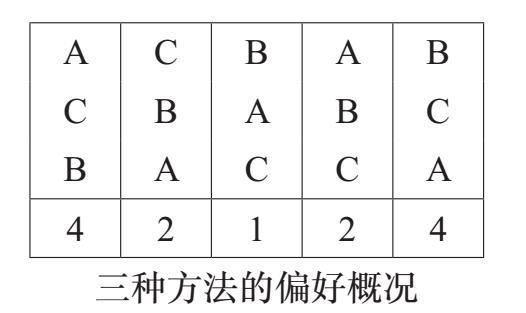
●简单多数票法。这可能是我们最熟悉的方法。我们选择大多数选民的首选为获胜者。我们不要求获胜者拥有超过一半的选票。
●对于上面的偏好概况，我们注意到A是大
多数选民（6票）的第一选择，其次是B（5票），最后C（2票）。因此，将多数票法应用于此偏好概况，我们将宣布A是获胜者。
●投两人票制。简单多数票法的一个问题是，它只关注选民的首选而忽略了选民的偏好。投两人票制方法计算每个候选成为选民首选或第二选择的次数。对于上一页图表的偏好概况，我们得到以下结果：
●– A获得6+1=7票（六次第一名和一次第二名）。
●– B获得5+4= 9票（五次第一名和四次第二名）。
●– C获得2+8=10票（两次第一名和八次第二名）。
●因此，当我们使用投两人票制时，C获胜。
这种方法是以18世纪的法国数学家让–查尔斯·波达（Jean–Charles de Borda）命名的。
在波达计数法中，如果有四个候选人，那么排名第一得3分，排名第二得2分，第三得1分，最后一名得0分。五个名次对应的值分别是4，3，2，1和0。注意，在两个候选人的情况下，波达计数法与多数投票制相同。
●波达计数法。简单多数票法的决策方法并不能相信选民的第二选择，而投两人票制的选择过于关注第二选择，令其权重和首选同样重要。波达计数法是这两者之间的让步。●在这种方法中，每个候选人排第一时可以得到2分，排第二名时得1分，最后一名不得分。将所有分数累计，得分最多的候选人获胜。
●我们来分析对于上面问题的偏好概况，波达计数法是如何计算的。
●–候选人A是6人的首选，是1人的第二选择。因此，得分为A→6×2+1×1=13。
●–候选人B是5人的首选，4人的第二选择。因此，得分为B→5×2+4×1=14。
●–候选人C是2人的首选，8人的第二选择。因此，得分为C→2×2+8×1=12。
●我们看到，按照波达计数法，B是获胜者。
以下是所使用的方法和所得结果的总结，所有这些都是针对相同的偏好概况：
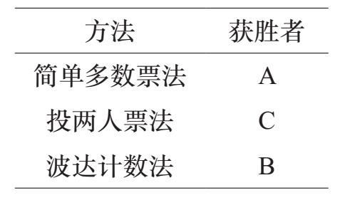
出现上面这种情况是不幸的。很难发现这些方法中的任何一个存在荒谬性（如奇数人投票制或少数投票制方法）。所有这三种方法都符合选民中立性、候选人中立性和单调性的公平标准，所以我们不能用这些属性中的任何一种来认定这些方法是无效的。也许我们可以找到另一个公平标准来指导我们选择出“最佳”决策方法。
我们提出的最终公平标准被称为不相关备选方案的独立性（independence of irrelevant alternatives）。这比我们以前提出的标准更技术化，这里做一个粗略的类比。
想象一下，你的朋友在餐厅用餐后要点甜品。选择有蛋糕、派或冰激凌。你的朋友点了冰激凌，但下了订单后，服务员告诉她：“哦，看起来派已经没有了。”此时，你的朋友说：“那样的话，我点蛋糕吧！”
这有任何意义吗？如果冰激凌是你朋友的首选（从蛋糕、派和冰激凌之中），那么餐厅没有派的事实应该是无关紧要的。我们在这里假设你的朋友改变主意是因为派没有了（而不仅仅是优先级的突然改变）。我们可能会质疑你朋友的智商！
我们应该期待决策方法具有理智性。假设决策方法声明X是某个偏好概况的胜出候选人。现在想象一下，另外一个候选人Y说退出竞选（没有选民改变他/她的偏好）。在这种情况下，X应该仍然是获胜者。这种方式的决策方法被认为是满足不相关备选方案的独立性。
我们来考虑一下简单多数票法。对于前面案例的偏好概况，简单多数票法宣布A是胜利者。现在假设C退出比赛。偏好概况如下所示：
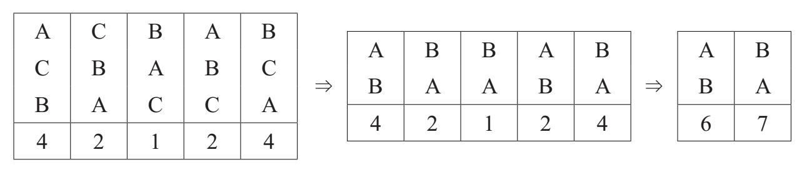
现在B变成了获胜者！多数票法不能满足不相关备选方案的独立性。
也许投两人票法更好。对于我们一直在研究的偏好概况，投两人票法选择C作为获胜者。如果A退出比赛，会发生什么？只剩下两名候选人了！这意味着我们有一个平局。试着创建一个有四个候选人（A，B，C和D）的偏好概况，投两人票法表明A是胜利者，但是当D退出时，则B是胜利者。答案见[1]。
最后，让我们考虑一下波达计数法。它宣布B成为这个偏好概况的赢家，但是如果和以前一样，C退出，那么A变为了获胜者。
我们提出的三种方法都无法满足不相关备选方案的独立性。
不用担心！人们提出了更多的决策方法。毫无疑问，其中某个方法能够满足不相关备选方案的独立性。例如，独裁者方法满足这个条件。（如果A是选民＃1的第一选择，那么不论另一个候选人是否退出A依然是获胜者。）当然，独裁者方法并不是一个可以接受的选择，因为它违背了选民中立性。
不过，有必要问一下：有什么公平的决策方法可以满足不相关备选方案的独立性？肯尼斯·阿罗在1950年发现了确切的答案。不幸的是，最终的答案是：没有。
阿罗不可能定理存在一点技术性，但是这意味着当有三个或更多候选人时，没有一种决策方法能够满足这些基本的公平标准。
我们接下来干吗？鉴于没有“公平”的决策方法，我们应该选择哪一个？或者不相关备选方案的独立性是不相干的？也就是说，选择不符合这个标准的决策方法是否有害处？
采用不符合不相关备选方案的独立性的决策方法的问题是，它可以鼓励选民报告与他们的偏好不同的排名。这种情况发生在存在“破坏者”的情况。假设你喜欢候选人A和B，但是确实厌恶C。你对A有偏好，但是你怀疑（从新闻报道中） A没有太多获胜的机会。但是，B和C都是强有力的候选人。谁会成为你的首选？在多数票法（和其他方法）中，尽管A是你的首选，但投票给A可能是不明智的。从本质上讲，A拿走了你给B的选票。
如果A继续参加竞选，而那些和你想法一样的人将票投给了A，那么可能会使B的选票大大减少，使C成了最终的获胜者。但是如果A退出竞选，你的投票将转给B，或给B更多赢得胜利的机会。
如果选举所使用的决策方法满足不相关备选方案的独立性，你将不会面对这个困境。你可以准确地填写你的偏好，因为你知道将A排在B前不会“浪费”你的选票。
[1]证明投两人票不能满足不相关备选方案的独立性。
假设偏好概况如下：
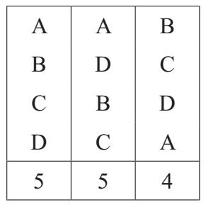
按投两人票决策方法分数如下：
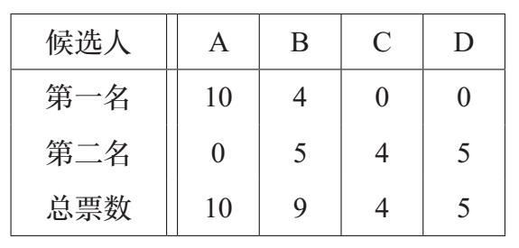
我们看到A赢得了这次选举。
现在假设D退出竞选。偏好概况现在看起来像这样：
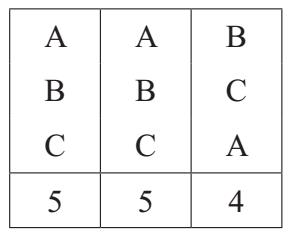
现在按投两人票决策方法A得10票，B得14票，C得4票，B是胜利者。
从本质上讲，D是一个破坏者，从B（第二栏）中抢走了票。
因此，最初A是胜利者，但当“不相关的备选方案”D退出时，胜利者变为了B。这表明投两人票不能满足不相关备选方案的独立性。